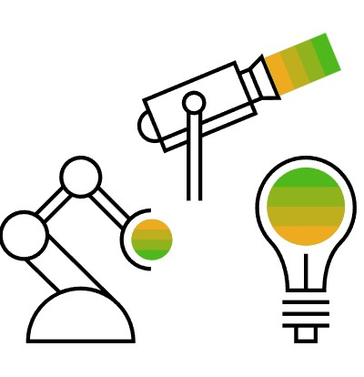
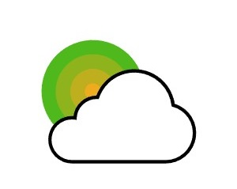
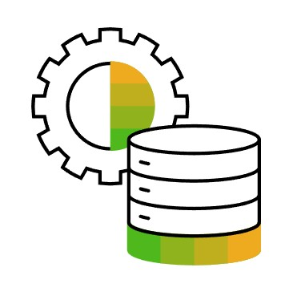
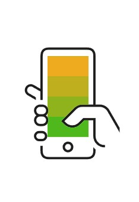

Em termos gerais, a Internet das Coisas (IoT) engloba qualquer objeto
ou "coisa" capaz de se conectar sem fio a uma rede de Internet. Atualmente, a IoT refere-se
mais especificamente a dispositivos equipados com sensores, software e outras tecnologias,
que permitem a transmissão e o recebimento de dados, com o objetivo de fornecer informações
aos usuários ou automatizar processos. Embora, no passado, a conectividade fosse predominantemente
realizada por Wi-Fi, hoje tecnologias como 5G e outras plataformas de rede estão revolucionando a
área, oferecendo a capacidade de lidar com grandes volumes de dados com alta velocidade e
confiabilidade, em praticamente qualquer local.
Como funciona internet das coisas?
Os dispositivos de Internet das Coisas (IoT) funcionam como uma extensão de nossa
percepção,
atuando como nossos olhos e ouvidos no ambiente quando não estamos fisicamente presentes. Esses dispositivos são
projetados para capturar uma ampla gama de dados, como temperatura, movimento, umidade, entre outros, de acordo
com as necessidades e configurações específicas de cada sistema. Uma vez coletados, esses dados são transmitidos
e analisados, proporcionando informações valiosas que podem ser usadas para embasar decisões informadas ou até
mesmo para automatizar uma série de ações e processos. O processo que envolve a IoT é complexo e dividido em
quatro
fases principais, que garantem a coleta, processamento e aplicação eficiente dos dados em tempo real.

Sensores e Dispositivos
Equipamentos que coletam dados como temperatura, movimento e umidade, e se conectam à internet via
Wi-Fi, Bluetooth, 5G ou redes específicas como LoRaWAN.

Nuvem
Os dados coletados são enviados para plataformas na nuvem, onde são armazenados e processados.

Análise de Dados
Os dados são analisados por softwares que podem gerar insights, identificar padrões ou automatizar
decisões.

Interface de Usuário
Aplicativos e dashboards permitem que usuários monitorem e controlem os dispositivos.